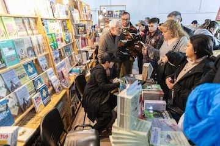
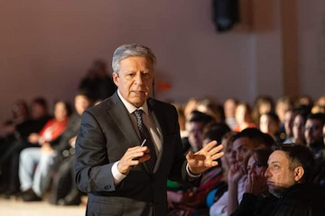
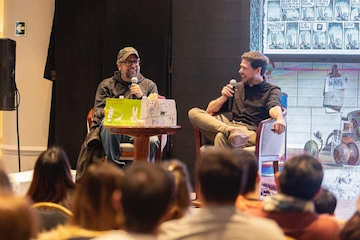

La 11° edición de la Feria Internacional del Libro será del 19 al 29 de septiembre
Organizada por la Municipalidad de Comodoro Rivadavia, en la provincia de Chubut, es una de las propuestas culturales para la promoción de la industria del libro más esperadas y convocantes de la región.
Reúne a escritores, periodistas, conferencistas, capacitadores, editoriales y librerías de todo el país.
 